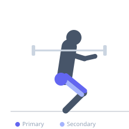

Exercise guide / Belt Squat Machine
Belt Squat Machine
The belt squat attaches a loaded belt around the lifter's hips rather than placing a barbell on the back or in the hands. The lifter stands elevated on two platforms or a dedicated machine, allowing the weight to hang between the legs. Because the spine is completely unloaded, the belt squat is ideal for athletes with lower back injuries who still want to train the legs with heavy compound squatting movements.
Primary muscles
rectus femoris
vastus lateralis
vastus medialis
vastus intermedius
gluteus maximus
Secondary muscles
biceps femoris long head
Stabilizers
transverse abdominis
Equipment
Dip Belt


Starting position
- Attach the loaded dip belt or use a dedicated belt squat machine. Stand on the elevated platforms with the weight hanging between the legs. Feet shoulder-width, toes turned out slightly.
Setup
- Attach plates to the belt and stand on two sturdy boxes or the dedicated machine platforms, allowing room for the weight to hang freely between them.
Steps
- Step 1: Stand tall and brace the core lightly — no spinal loading is required.
- Step 2: Bend the knees and hips to squat down, allowing the weight to hang and descend freely.
- Step 3: Descend to depth, maintaining an upright torso.
- Step 4: Drive through the feet to extend back to standing.
Coaching cues
- Stand tall
- Weight hangs — don't pull it
- Full depth every rep
Breathing
- Breathe naturally — spinal loading is minimal so heavy bracing is less critical.
Range of motion
- Full depth — hip crease below knee. The belt position encourages upright posture.
Tempo
- 3-0-1-0
Common mistakes
- Leaning too far forward despite the absence of spinal loading
- Insufficient depth
- Belt shifting during the movement
Safety
- Ensure the platforms are stable and wide enough
- Verify the belt attachment is secure before each set
Training
- strength: 5–8 reps
- hypertrophy: 10–20 reps
- endurance: 20–30 reps
- strength: 3–5 sets
- hypertrophy: 3–5 sets
- endurance: 2–4 sets
- Rest: {'strength': 120, 'hypertrophy': 90, 'endurance': 45}